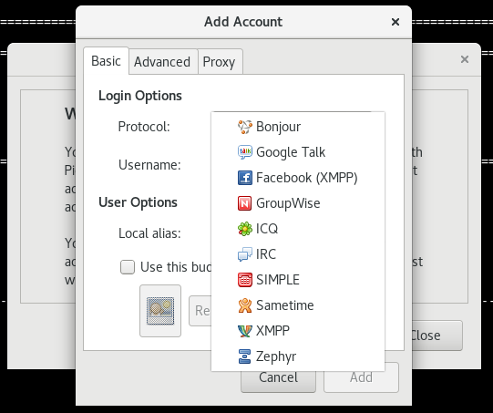
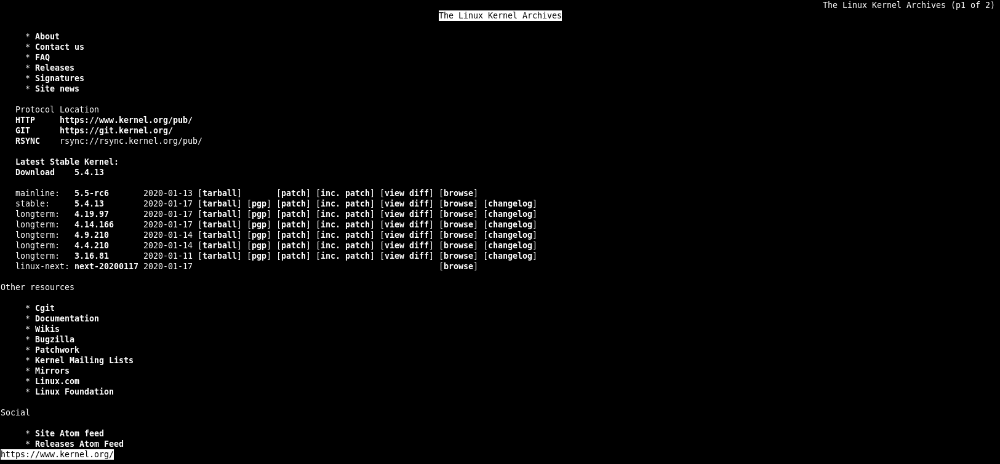

04 常用网络命令
1. 网络参数设置指令⚓
1.1 查看网络信息⚓
[root@centos-server-1 ~]# ifconfig eth1
eth1: flags=4163<UP,BROADCAST,RUNNING,MULTICAST> mtu 1500
inet 172.16.2.182 netmask 255.255.255.0 broadcast 172.16.2.255
inet6 fe80::8568:7ee7:84b7:9c15 prefixlen 64 scopeid 0x20<link>
ether 00:1a:4a:16:01:53 txqueuelen 1000 (Ethernet)
RX packets 172272 bytes 30899015 (29.4 MiB)
RX errors 0 dropped 17 overruns 0 frame 0
TX packets 4177 bytes 293101 (286.2 KiB)
TX errors 0 dropped 0 overruns 0 carrier 0 collisions 0
[root@centos-server-1 ~]# ip -s link show eth0
2: eth0: <BROADCAST,MULTICAST,UP,LOWER_UP> mtu 1500 qdisc pfifo_fast state UP mode DEFAULT qlen 1000
link/ether 00:1a:4a:16:01:52 brd ff:ff:ff:ff:ff:ff
RX: bytes packets errors dropped overrun mcast
1307897 17095 0 0 0 0
TX: bytes packets errors dropped carrier collsns
224643 973 0 0 0 0
信息说明：
- txqueuelen：代表用来传输数据的缓冲区的长度
- RX：代表的是网络由启动到目前为止的报文接收情况
- bytes：接收总量
- packets：报文数
- errors：报文发生错误的数量
- dropped：丢弃的报文数量
- TX：代表的是网络由启动到目前为止的报文发送情况
- collisions：报文碰撞次数
1.2 修改网络设置⚓
以下修改都是临时修改，并没有写入配置文件。
1.2.1 针对设备进行设置⚓
ip link <动作> <参数>
动作
add
delete
set
show
[root@centos-server-1 ~]# ip link show eth0
3: eth1: <BROADCAST,MULTICAST> mtu 1500 qdisc pfifo_fast state DOWN mode DEFAULT qlen 1000
link/ether 00:1a:4a:16:01:53 brd ff:ff:ff:ff:ff:ff
# 修改 mtu
[root@centos-server-1 ~]# ip link set eth1 mtu 1000
# 停止设备
[root@centos-server-1 ~]# ip link set eth1 down
# 修改名称
[root@centos-server-1 ~]# ip link set eth1 name eth-test
[root@centos-server-1 ~]# ip link show
……
3: eth-test: <BROADCAST,MULTICAST> mtu 1000 qdisc pfifo_fast state DOWN mode DEFAULT qlen 1000
link/ether 00:1a:4a:16:01:53 brd ff:ff:ff:ff:ff:ff
# 测试完把它修改过来
[root@centos-server-1 ~]# ip link set eth-test name eth1
[root@centos-server-1 ~]# ip link set eth1 up
1.2.2 针对IP协议进行设置⚓
ip addr <动作> <参数>
动作
add|change| replace
del
show
作用域 scope 的值有以下几种：
- global - the address is globally valid.
- site - (IPv6 only, deprecated) the address is site local, i.e. it is valid inside this site.
- link - the address is link local, i.e. it is valid only on this device.
- host - the address is valid only inside this host.
# 添加网络接口。并让系统自动计算 broadcast 的值；label 是别名
[root@centos-server-1 ~]# ip a add 192.168.216.10/23 br + dev eth1 label eth1:sink
[root@centos-server-1 ~]# ip a show eth1
3: eth1: <BROADCAST,MULTICAST,UP,LOWER_UP> mtu 1500 qdisc pfifo_fast state UP qlen 1000
link/ether 00:1a:4a:16:01:53 brd ff:ff:ff:ff:ff:ff
inet 172.16.2.182/24 brd 172.16.2.255 scope global eth1
valid_lft forever preferred_lft forever
inet 192.168.216.10/23 brd 192.168.217.255 scope global eth1:sink
valid_lft forever preferred_lft forever
inet6 fe80::8568:7ee7:84b7:9c15/64 scope link
valid_lft forever preferred_lft forever
[root@centos-server-1 ~]# ifconfig eth1:sink
eth1:sink: flags=4163<UP,BROADCAST,RUNNING,MULTICAST> mtu 1500
inet 192.168.216.10 netmask 255.255.254.0 broadcast 192.168.217.255
ether 00:1a:4a:16:01:53 txqueuelen 1000 (Ethernet)
[root@centos-server-1 ~]# ip a del 192.168.216.10/23 dev eth1
1.2.3 针对路由进行设置⚓
ip route <动作> <参数>
动作
add
change
replace change or add new one
dev NAME 从哪个 设备 出去
via GW 从哪个 GATEWAY 出去
mtu MTU
protocol RTPROTO
redirect - the route was installed due to an ICMP redirect.
kernel - the route was installed by the kernel during autoconfiguration.
boot - the route was installed during the bootup sequence. If a routing daemon starts, it will purge all of them.
static - the route was installed by the administrator to override dynamic routing. Routing daemon will respect them and, probably, even advertise them to its peers.
ra - the route was installed by Router Discovery protocol.
del
show
[root@centos-server-1 ~]# ip r
default via 172.16.2.254 dev eth1 proto static metric 100
172.16.2.0/24 dev eth1 proto kernel scope link src 172.16.2.182 metric 100
192.168.75.0/24 dev eth0 proto kernel scope link src 192.168.75.128 metric 100
# 增加路由，主要是本机可直接连通的网域，不需要通过外部的路由器
[root@centos-server-1 ~]# ip r add 172.16.7.0/24 dev eth1
[root@centos-server-1 ~]# ip r
……
172.16.7.0/24 dev eth1 scope link
# 增加可以通往外部的路由，需要通过外部 router 喔，添加的路由规则必须是可以连通的
[root@centos-server-1 ~]# ip r add 172.16.6.0/24 via 172.16.2.254 dev eth1
[root@centos-server-1 ~]# ip r
……
172.16.6.0/24 via 172.16.2.254 dev eth1
# 删除默认路由
[root@centos-server-1 ~]# ip r del default
# 添加默认路由
[root@centos-server-1 ~]# ip r add default via 172.16.2.254 dev eth1
1.3 手动使用 DHCP 自动取得 IP 参数⚓
不一定要直接编辑 ifcfg-xxx ，也可以使用 dhclient ：
[root@centos-server-1 ~]# dhclient -v eth1
可以立刻叫我们的网卡以 dhcp 协议去尝试取得 IP。若不能接收到DHCP的信息，则不会改动现有配置。
2. 网络检测指令⚓
2.1 ping⚓
ping 主要透过 ICMP 报文来进行整个网络的状况报告。
ping options destination
OPTIONS
-4 Use IPv4 only.
-6 Use IPv6 only.
-c 执行次数
-s 数据大小，默认是56，这个数据还需要加上
-W 等待响应的秒数
-t TTL 的数值,预设是 255,每经过一个节点就会减一;
-M pmtudisc_opt 主要用于侦测网络的 MTU 数值大小
do :代表传送一个 DF (Don't Fragment) 旗标,让报文不能重新拆包与打包;
dont:代表不要传送 DF 旗标,表示报文可以在其他主机上拆包与打包
Note
ping 还是需要透过 IP 报文来传送 ICMP 报文的。如果你的主机与待侦测主机并不在同一个网段内， 那么 TTL 预设使用255，如果是同一个网域内，那么 TTL 预设则使用 64。
# 不知道为什么 TTL 不对 //TODO
[root@centos-server-1 ~]# ping -c 2 -W 2 -t 90 baidu.com
PING baidu.com (39.156.69.79) 56(84) bytes of data.
64 bytes from 39.156.69.79 (39.156.69.79): icmp_seq=1 ttl=47 time=33.3 ms
64 bytes from 39.156.69.79 (39.156.69.79): icmp_seq=2 ttl=47 time=28.5 ms
--- baidu.com ping statistics ---
2 packets transmitted, 2 received, 0% packet loss, time 1003ms
rtt min/avg/max/mdev = 28.510/30.921/33.333/2.417 ms
2.1.1 检测路径中最大的 MTU 数值⚓
我们知道网络卡的 MTU （代表 frame 的大小）修改可以透过 ifconfig 或者是 ip 等指令来达成，那么追踪整个网络传输的最大 MTU 时，又该如何查询？最简单的方法当然是透过 ping 传送一个大报文， 并且不许中继的路由器或 switch 将该报文重组，那就能够处理啦！
[root@centos-server-1 ~]# ping -c 2 -W 2 -s 1000 -M do baidu.com
PING baidu.com (220.181.38.148) 1000(1028) bytes of data.
# 有响应代表可以通过；无响应代表太大了
1008 bytes from 220.181.38.148 (220.181.38.148): icmp_seq=1 ttl=50 time=34.0 ms
1008 bytes from 220.181.38.148 (220.181.38.148): icmp_seq=2 ttl=50 time=34.5 ms
……
# 禁止拆包与打包
[root@centos-server-1 ~]# ping -c 2 -W 2 -s 9000 -M do baidu.com
PING baidu.com (220.181.38.148) 9000(9028) bytes of data.
# 报错啦，本地才 1500，传送的却是 9000，修改一下网卡的设置吧
ping: local error: Message too long, mtu=1500
……
[root@centos-server-1 ~]# ip l set eth1 mtu 10000
[root@centos-server-1 ~]# ping -c 2 -W 2 -s 9000 -M do baidu.com
PING baidu.com (220.181.38.148) 9000(9028) bytes of data.
--- baidu.com ping statistics ---
2 packets transmitted, 0 received, 100% packet loss, time 1000ms
IP 报文表头 (不含 options) 就已经占用了 20 bytes ，再加上 ICMP 的表头有 8 bytes ，所以当然你在使用 -s size 的时候，那个报文的大小就得要先扣除 (20+8=28) 的大小了。
Warning
除非真的需要调整，否则不要随便改动 MTU。
2.2 两主机之间各节点分析：traceroute⚓
traceroute options IP/DOMAIN
OPTIONS
-n 不要进行IP与域名的转换
-U --udp default port is 53
-I --icmp
-T --tcp default port is 80
-p port --port=port
-w waittime 每次检测的等待时间，默认为 5.0 秒
-i device
-g gate,... Route packets through the specified gateway
[root@centos-server-1 ~]# traceroute -n -T www.baidu.com
traceroute to www.baidu.com (14.215.177.39), 30 hops max, 60 byte packets
1 * * *
2 * * *
3 * * *
4 117.40.142.1 6.621 ms 6.634 ms 6.665 ms
5 117.21.2.113 6.430 ms * 117.21.2.89 6.610 ms
6 * * 1.1.10.5 4.437 ms
7 220.177.251.161 16.120 ms 220.177.251.173 13.882 ms 220.177.251.137 9.486 ms
8 * 202.97.82.73 14.170 ms *
9 113.96.5.54 25.018 ms 113.96.4.74 27.305 ms 113.96.5.58 18.974 ms
10 * 113.96.11.74 20.085 ms 20.181 ms
11 * * *
12 * * *
13 14.215.177.39 14.360 ms * 22.862 ms
回传星号的，代表该 node 可能设有某些防护措施，让我们发送的报文信息被丢弃。
2.3 查看本机的网络联机与后门：netstat⚓
netstat option
路由选项
-r, --route 路由表
-n 同 route 的 选项
网络选项
-a, --all display all sockets (default: connected)
-l, --listening display listening server sockets
-n, --numeric don't resolve names
-t, --tcp
-u, --udp
-p, --program
[root@centos-server-1 ~]# netstat -l
Active Internet connections (only servers)
Proto Recv-Q Send-Q Local Address Foreign Address State
tcp 0 0 0.0.0.0:sunrpc 0.0.0.0:* LISTEN
tcp 0 0 0.0.0.0:ssh 0.0.0.0:* LISTEN
tcp 0 0 localhost:smtp 0.0.0.0:* LISTEN
tcp6 0 0 [::]:sunrpc [::]:* LISTEN
……
Active UNIX domain sockets (only servers)
Proto RefCnt Flags Type State I-Node Path
unix 2 [ ACC ] STREAM LISTENING 18129 public/pickup
unix 2 [ ACC ] STREAM LISTENING 18133 public/cleanup
unix 2 [ ACC ] STREAM LISTENING 18136 public/qmgr
……
Internet connections 部分各个字段的意义：
- Proto：socket 使用的协议
- Recv-Q：
- Established：连接到此套接字的用户程序未复制的字节数；
- Listening：自内核 2.6.18 以来，此列还包含当前 syn 。
- Send-Q：
- Established：远程主机未确认的字节数；
- Listening：自内核 2.6.18 以来，此列还包含当前 syn 的最大大小。
- Local Address：本地地址
- Foreign Address：远程地址
- State：状态
- ESTABLISHED：已连接
- SYN_SENT：socket 正在主动尝试建立连接
- SYN_RECV：接收到了连接请求
- FIN_WAIT1：socket 已经关闭了，正在关闭连接 The socket is closed, and the connection is shutting down.
- FIN_WAIT2：连接已关闭，socket 正在等待远端关闭（等待对方主机响应断线确认的报文） Connection is closed, and the socket is waiting for a shutdown from the remote end.
- TIME_WAIT：连接已关闭，但 socket 还在网络上等待结束 The socket is waiting after close to handle packets still in the network.
- CLOSE：socket 未被使用
- CLOSE_WAIT：远端已经关闭，等待socket关闭 The remote end has shut down, waiting for the socket to close.
- LAST_ACK：远端和socket已经关闭，等待确认报文 The remote end has shut down, and the socket is closed. Waiting for acknowledgement.
- LISTEN：socket正在监听，使用
-l或-a选项查看 - CLOSING：两边的socket都关闭了，但是数据还未发送完毕 Both sockets are shut down but we still don't have all our data sent.
- UNKNOWN The state of the socket is unknown.
Client 端是随机取一个大于 1024 的port 进行联机，此外只有 root 可以启动小于 1024 的 port。
2.4 侦测主机名与IP的对应关系⚓
2.4.1 dig⚓
DNS lookup utility。
[root@dev ~]# dig www.baidu.com
; <<>> DiG 9.11.4-P2-RedHat-9.11.4-9.P2.el7 <<>> www.baidu.com
;; global options: +cmd
;; Got answer:
;; ->>HEADER<<- opcode: QUERY, status: NOERROR, id: 23025
;; flags: qr rd ra; QUERY: 1, ANSWER: 3, AUTHORITY: 0, ADDITIONAL: 1
;; OPT PSEUDOSECTION:
; EDNS: version: 0, flags:; udp: 512
;; QUESTION SECTION:
;www.baidu.com. IN A
;; ANSWER SECTION:
www.baidu.com. 1160 IN CNAME www.a.shifen.com.
www.a.shifen.com. 217 IN A 14.215.177.39
www.a.shifen.com. 217 IN A 14.215.177.38
;; Query time: 41 msec
;; SERVER: 8.8.8.8#53(8.8.8.8)
;; WHEN: Wed Jan 15 10:29:37 CST 2020
;; MSG SIZE rcvd: 101
8.8.8.8就是DNS服务器的地址喽！
使用指定的域名服务器去查询：
[root@dev ~]# dig @114.114.114.114 baidu.com
反查询：
[root@dev ~]# dig -x 140.82.114.3
2.4.2 host⚓
DNS lookup utility
[root@dev ~]# host www.baidu.com
www.baidu.com is an alias for www.a.shifen.com.
www.a.shifen.com has address 14.215.177.39
www.a.shifen.com has address 14.215.177.38
www.a.shifen.com has IPv6 address 240e:ff:e020:36:0:ff:b00c:268a
www.a.shifen.com has IPv6 address 240e:ff:e020:37:0:ff:b08c:124f
默认使用 /etc/resolv.conf 中的DNS服务器，下面是指定服务器的用法：
[root@dev ~]# host www.baidu.com 114.114.114.114
Using domain server:
Name: 114.114.114.114
Address: 114.114.114.114#53
Aliases:
www.baidu.com is an alias for www.a.shifen.com.
www.a.shifen.com has address 14.215.177.38
www.a.shifen.com has address 14.215.177.39
www.a.shifen.com has IPv6 address 240e:ff:e020:37:0:ff:b08c:124f
www.a.shifen.com has IPv6 address 240e:ff:e020:36:0:ff:b00c:268a
2.4.3 nslookup⚓
交互式查询互联网域名服务器
[root@dev ~]# nslookup www.baidu.com
Server: 8.8.8.8
Address: 8.8.8.8#53
Non-authoritative answer:
www.baidu.com canonical name = www.a.shifen.com.
Name: www.a.shifen.com
Address: 14.215.177.39
Name: www.a.shifen.com
Address: 14.215.177.38
Name: www.a.shifen.com
Address: 240e:ff:e020:37:0:ff:b08c:124f
Name: www.a.shifen.com
Address: 240e:ff:e020:36:0:ff:b00c:268a
指定域名服务器的用法与 host 一样。不一样的是该命令还可以根据IP查询主机名：
[root@dev ~]# nslookup 114.114.114.114
114.114.114.114.in-addr.arpa name = public1.114dns.com.
[root@dev ~]# nslookup 140.82.114.3
3.114.82.140.in-addr.arpa name = lb-140-82-114-3-iad.github.com.
建议使用 dig 替代该命令。
3. 远程联机指令与实时通讯软件⚓
3.1 telnet⚓
telnet 本身的数据在传送的时候是使用明文 (原始的数据，没有加密)。
yum install telnet
查询某个端口是否启动或可用：
# 不正常的端口
[root@dev ~]# telnet localhost 8080
Trying ::1...
telnet: connect to address ::1: Connection refused
Trying 127.0.0.1...
telnet: connect to address 127.0.0.1: Connection refused
# 正常端口
[root@dev ~]# telnet localhost 22
Trying ::1...
Connected to localhost.
Escape character is '^]'.
SSH-2.0-OpenSSH_7.4
……
3.2 FTP 联机软件：ftp，lftp⚓
这两个是FTP客户端。
yum install ftp lftp
ftp <host> [port]
[root@dev ~]# ftp ftp.ksu.edu.tw
Connected to ftp.ksu.edu.tw (120.114.150.21).
220 Welcome to Kun Shan University FTP service.
# 匿名登录
Name (ftp.ksu.edu.tw:root): anonymous
331 Please specify the password.
# 无需密码
Password:
230 Login successful.
Remote system type is UNIX.
Using binary mode to transfer files.
# 查看有哪些指令
ftp> ?
lftp 可以使用脚本来执行ftp的命令，方便很多哦！默认使用匿名登录。
lftp [OPTS] <site>
-f <file> execute commands from the file and exit
-c <cmd> execute the commands and exit
-u <user>[,<pass>] use the user/password for authentication
-p <port> use the port for connection
[root@dev lftp-test]# cat lftp-ls.sh
# open 指令也可以指定 用户名 和 密码
open ftp.ksu.edu.tw
ls
bye
[root@dev lftp-test]# lftp -f lftp-ls.sh
drwxr-xr-x 3 0 0 4096 Nov 20 2018 mirrors
drwxr-xr-x 7 0 0 4096 May 15 2017 pub
图形界面的FTP客户端则可以使用 gftp。
3.3 图形界面实时通讯软件⚓
pidgin支持多种账户哦。

4. 文本界面的网页浏览⚓
4.1 文字浏览器：links⚓
links [options] URL
URL：local (file://) or remote (http:// or ftp://) URLs
OPTIONS
-dump <url> Write formatted document to stdout.
-codepage <codepage> For dump, convert output to specified character set -- for eaxmple iso-8859-2, windows-1250.
-language <language> Set user interface language.
按键功能：
- 箭头键：
- 上 :移动光标至本页中 "上一个可连结点" .
- 下 :移动光标至本页中 "下一个可连结点" .
- 左 :back. 跳回上一页.
- 右 :进入反白光标所链接之网页.
- q：退出
- Enter：进入网页
[root@dev ~]# links -language English http://www.kernel.org

# 打开本地html文件
[root@dev ~]# links /usr/share/doc/HTML/index.html
# 下载网页
[root@dev ~]# links -dump www.baidu.com > baidu.html
4.2 文字接口下载器：wget⚓
wget [option]... [URL]...
It supports HTTP, HTTPS, and FTP protocols, as well as retrieval through HTTP proxies.
OPTIONS
--http-user=user
--http-password=password
5. 报文劫取⚓
5.1 在文本界面劫取⚓
tcpdump [-AennqX] [-i 接口] [-w 储存文件名] [-c 次数] [-r 文件] [报文数据格式]
dump traffic on a network
OPTIONS
-A :报文的内容以 ASCII 显示,通常用来捉取 WWW 的网页报文资料
-e :使用资料连接层 (OSI 第二层) 的 MAC 报文数据来显示
-nn:直接以 IP 及 port number 显示,而非主机名与服务名称
-q :仅列出较为简短的报文信息,每一行的内容比较精简
-X :可以列出十六进制 (hex) 以及 ASCII 的报文内容,对于监听报文内容很有用
-i :后面接要『监听』的网络接口,例如 eth0, lo, ppp0 等
-w :如果你要将监听所得的报文数据储存下来,用这个参数就对了!后面接文件名
-r :从后面接的文件将报文数据读出来。那个『文件』是已经存在的文件,并且这个『文件』是由 -w 所制作出来的。
-c :监听的报文数,如果没有这个参数, tcpdump 会持续不断的监听,直到使用者输入 [ctrl]-c 为止。
报文数据格式
监听对象
host 针对主机
net 针对网段
来源与目的
src 监听对象
dst 监听对象
协议端口
tcp port
udp port
arp
ether
还可以利用 and 与 or 来进行报文数据的整合显示
[root@dev ~]# tcpdump -i ens37 -nn | grep 172.16.2.27
tcpdump: verbose output suppressed, use -v or -vv for full protocol decode
listening on ens37, link-type EN10MB (Ethernet), capture size 262144 bytes
……
19:56:51.364576 IP 172.16.2.27.42191 > 172.16.2.241.443: Flags [F.], seq 1897, ack 2617, win 16404, length 0
19:56:51.364745 IP 172.16.2.241.443 > 172.16.2.27.42191: Flags [.], ack 1898, win 262, length 0
19:56:51.615758 IP 172.16.2.27.38987 > 220.181.43.8.80: Flags [P.], seq 1477349857:1477349877, ack 4261357776, win 16395, length 20: HTTP
^C28490 packets captured
28514 packets received by filter
22 packets dropped by kernel
对各个字段的说明：
- 时间
- 通信协议
- 发送端.端口
- 接收端.端口
- 标志
# 只劫取ftp端口的流量
[root@dev ~]# tcpdump -i ens37 -nn port 21
tcpdump: verbose output suppressed, use -v or -vv for full protocol decode
listening on ens37, link-type EN10MB (Ethernet), capture size 262144 bytes
# 三次握手
# c > s : S
20:10:20.594196 IP 172.16.2.237.53362 > 120.114.150.21.21: Flags [S], seq 3410236902, win 29200, options [mss 1460,sackOK,TS val 211466649 ecr 0,nop,wscale 7], length 0
# s > c : S,ack
20:10:20.918310 IP 120.114.150.21.21 > 172.16.2.237.53362: Flags [S.], seq 147464366, ack 3410236903, win 65535, options [mss 1380,nop,wscale 6,sackOK,TS val 469215699 ecr 211466649], length 0
# c > s : sck
20:10:20.918375 IP 172.16.2.237.53362 > 120.114.150.21.21: Flags [.], ack 1, win 229, options [nop,nop,TS val 211466973 ecr 469215699], length 0
……
为了让网络接口可以让 tcpdump 监听，所以执行 tcpdump 时网络接口会进入错乱模式 (promiscuous)，所以你会在 /var/log/messages 里面看到很多的警告讯息，这是正常现象。
5.2 在图形界面劫取⚓
yum install wireshark wireshark-gnome
前者是在文本界面劫取，后者是在图形界面劫取
5.3 任意启动 TCP/UDP 报文的端口联机: nc, netcat⚓
nc 指令可以用来作为某些服务的检测，因为他可以连接到某个 port 来进行沟通，此外，还可以自行启动一个 port 来监听其他用户的联机。有的系统将执行文件 nc 改名为 netcat，CentOS7下 nc 就是 ncat。
yum install nmap-ncat
ncat [options] [hostname] [port]
Options
-l, --listen Bind and listen for incoming connections
-u, --udp Use UDP instead of default TCP
可以用来取代 telnet :
[root@dev ~]# nc localhost 21
Ncat: Connection refused.
[root@dev ~]# nc localhost 22
SSH-2.0-OpenSSH_7.4
建立简单的通信：
[root@dev ~]# nc -l localhost 9003
# 此时再打开一个终端去连接
[root@dev ~]# nc localhost 9003
# 两边输入的字符在对方也会显示出来
更多功能help一下吧。